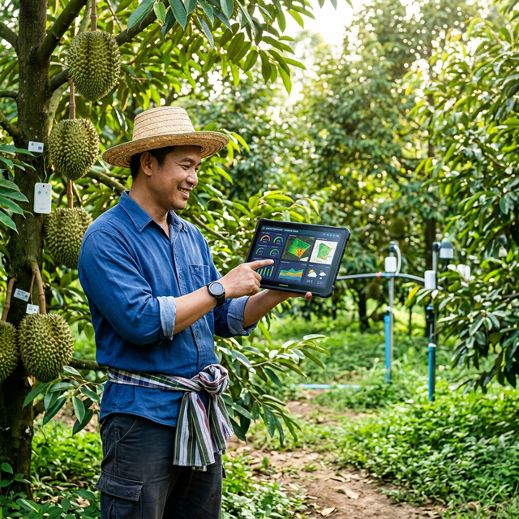
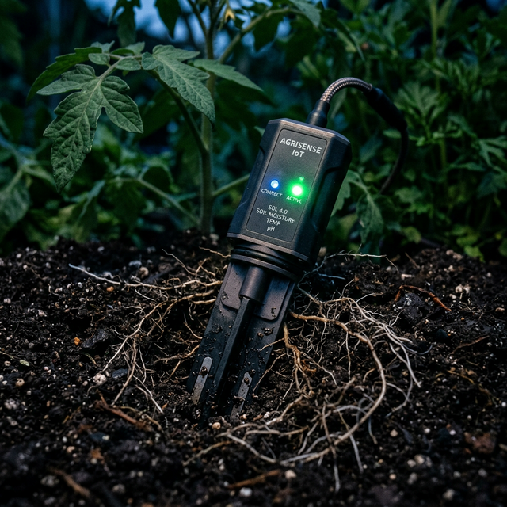
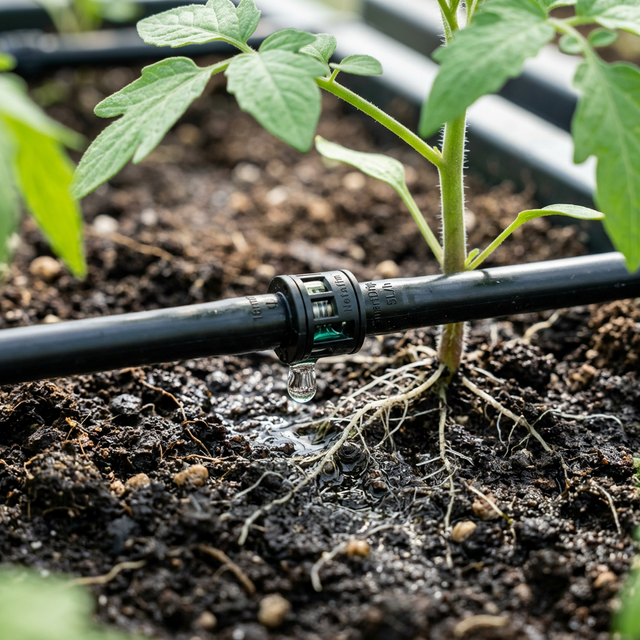
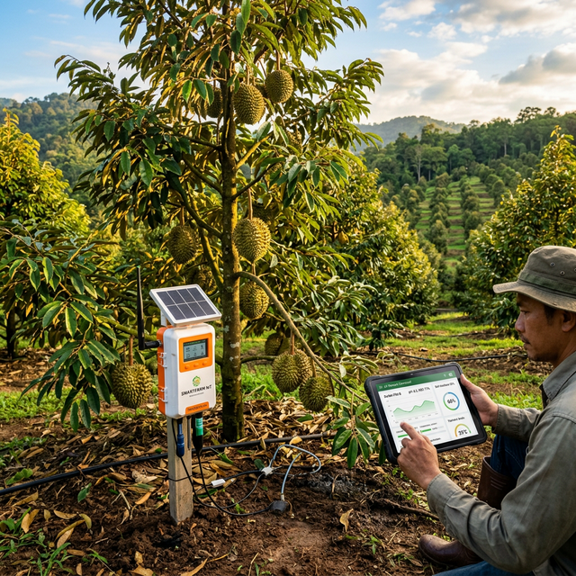

บ้านอัจฉริยะสำหรับรากพืช
ทีมหลวงพี่เท่ง · 2025
โลกกำลังก้าวเข้าสู่อุตสาหกรรมยุค 4.0 อย่างรวดเร็ว ในขณะที่ Smart Home และ Smart Factory ได้รับเงินลงทุนมหาศาล แต่ภาคการเกษตรกลับเป็นกลุ่มที่นำเทคโนโลยีมาใช้น้อยที่สุด
เกษตรกรไม่สามารถมองเห็นสุขภาพดินได้แบบเรียลไทม์ พวกเขาจะรู้ปัญหาต่อเมื่อต้นไม้แสดงอาการป่วยออกมา ซึ่งมักจะสายเกินแก้
การใช้ "ความรู้สึก" นำไปสู่การให้น้ำและปุ๋ยที่ผิดพลาด นอกจากจะเปลืองค่าปุ๋ยราคาแพงแล้ว ยังเป็นสาเหตุหลักของโรครากเน่า
การหาคนงานที่มีทักษะมาผสมปุ๋ยและเดินรดน้ำทุกวันในสวนผลไม้ขนาดใหญ่ เป็นเรื่องที่ยากลำบากและมีต้นทุนสูงมากในปัจจุบัน
NutriFlow ทำหน้าที่เสมือนคุณหมอประจำตัวของต้นไม้
เรากำจัดความผิดพลาดของมนุษย์ให้เป็นศูนย์ โดยเปลี่ยนการรดน้ำที่ใช้แรงงานเยอะ ให้เป็นระบบอัตโนมัติ (Fertigation) ที่ขับเคลื่อนด้วย AI แม่นยำ 100%
เกษตรกรสามารถควบคุมสวนขนาดร้อยไร่ได้ผ่านมือถือ พร้อมรับการแจ้งเตือนแบบเรียลไทม์ก่อนที่ความเสียหายของรากพืชจะเกิดขึ้น


เซนเซอร์ IoT เกรดอุตสาหกรรมฝังลงในดิน เพื่อเก็บข้อมูลธาตุอาหาร (NPK) ความชื้น และ pH ตลอด 24 ชั่วโมง
สมองกล AI กลางจะประมวลผลข้อมูลจากเซนเซอร์ทันที เพื่อคำนวณหาสูตรปุ๋ยเฉพาะที่ต้นไม้ต้องการในเวลานั้นอย่างแม่นยำ

ปั๊มผสมปุ๋ยอัตโนมัติจะผสมสารอาหารและจ่ายน้ำส่งตรงถึงรากพืชผ่านระบบน้ำหยด โดยที่เกษตรกรไม่ต้องออกแรง
มาทดสอบ AI ของเรากัน! ลองกรอกข้อมูลฟาร์มของคุณด้านล่าง เพื่อให้ระบบประมวลผลสูตรปุ๋ยแบบเรียลไทม์
AI กำลังคำนวณสูตรอาหารที่เหมาะสมที่สุด...
ผลสำรวจจากเกษตรกร 38 ท่าน ทำให้เราพบความจริงว่า: ตลาดแมสไม่พร้อมจ่ายเทคโนโลยี เราจึงปรับแผนบุกตลาดพืชมูลค่าสูงที่คุ้มค่าต่อการลงทุน
97% ของเกษตรกรกลุ่มพืชมูลค่าสูง พร้อมและต้องการใช้งานระบบอัตโนมัติทันที
Smart Farming ทั้งหมดในไทย > 10,000 ล้านบาท
สวนผลไม้มูลค่าสูง + โรงเรือน ~3,000 ล้านบาท
100 ฟาร์มทุเรียนภาคตะวันออก
TAM (ตลาดรวมทั้งหมด): ตลาด Smart Farming ในไทยมีมูลค่ากว่าหมื่นล้านบาทและกำลังเติบโตอย่างรวดเร็ว
SAM (ตลาดที่เราเข้าถึงได้): เราโฟกัสเฉพาะกลุ่มสวนผลไม้มูลค่าสูงและโรงเรือนอัจฉริยะ ซึ่งมีมูลค่าหลายพันล้านบาท
SOM (ตลาดเป้าหมายระยะสั้น): เป้าหมายแรกคือการคว้าสวนทุเรียนพรีเมียม 100 แห่งในภาคตะวันออก เพื่อทำผลกำไรและก้าวเป็นผู้นำตลาด
| องค์ประกอบ | รายละเอียดกลยุทธ์ |
|---|---|
| ปัญหา (Problem) | ทำเกษตรแบบตาบอด, เดาสูตรปุ๋ยผิดพลาด, ขาดแคลนแรงงาน, ผลผลิตรากเน่าและไม่แน่นอน |
| กลุ่มเป้าหมาย (Customer Segments) | เกษตรกรผู้ปลูกพืชเศรษฐกิจมูลค่าสูง (ทุเรียน, เมล่อน, พืชโรงเรือน) ในพื้นที่ภาคตะวันออก |
| จุดขาย (Value Proposition) | "บ้านอัจฉริยะสำหรับรากพืช" - ระบบควบคุมและจ่ายปุ๋ยอัตโนมัติแม่นยำสูงด้วย AI 100% |
| โซลูชัน (Solution) | เซนเซอร์ IoT วัดดิน + AI คำนวณสูตรปุ๋ย + ปั๊มจ่ายปุ๋ยอัตโนมัติ + แดชบอร์ดมอนิเตอร์บนมือถือ |
| ข้อได้เปรียบ (Unfair Advantage) | การเชื่อมฐานข้อมูลดินของกรมพัฒนาที่ดิน (LDD) เข้ากับโมเดล AI เฉพาะทางของเรา (คู่แข่งเลียนแบบไม่ได้) |
จ่ายครั้งเดียว (เงินก้อน)
สร้างกระแสเงินสดทันทีจากการขายชุดเซนเซอร์ IoT, ตู้คอนโทรลอัจฉริยะ, ปั๊มผสมปุ๋ย และค่าบริการติดตั้งหน้างานระดับมืออาชีพ
เก็บรายปี (เงินหมุนเวียนต่อเนื่อง)
รายได้ระยะยาวเพื่อความยั่งยืน เกษตรกรจ่ายเพื่อเข้าถึงระบบคลาวด์บนมือถือ, การแจ้งเตือนแบบเรียลไทม์ และการอัปเดตสูตรปุ๋ย AI รุ่นใหม่
ทำ B2B Pilot Demos: ให้สวนทุเรียนรายใหญ่ในภาคตะวันออกทดลองใช้ฟรี 1 เดือน เพื่อเก็บข้อมูลพิสูจน์ความคุ้มค่า (ROI)
พาร์ทเนอร์รับเหมา: จับมือกับบริษัทรับเหมาสร้างโรงเรือนอัจฉริยะ เพื่อพ่วงระบบ NutriFlow เข้าไปเป็นมาตรฐานการติดตั้ง
ออกงานแฟร์เกษตร: จัดแสดงในงานนิทรรศการระดับประเทศ เพื่อสร้างแบรนด์และเจาะกลุ่มนายทุนที่ไม่มีเวลาเข้าสวน
ขยายสเกลทั่วประเทศ: กระจายทีมตัวแทนจำหน่ายบุกพื้นที่ปลูกพืชเศรษฐกิจมูลค่าสูงในทุกภูมิภาค
คู่แข่งในตลาดมีแค่แอปตั้งเวลาธรรมดา (ฝนตกก็ยังรดน้ำ) แต่ NutriFlow ให้ทั้ง ความแม่นยำสูง และ เป็นอัตโนมัติเต็มรูปแบบ

เราเชื่อมั่นในการสร้างธุรกิจที่เติบโตไปพร้อมกับการปกป้องสิ่งแวดล้อม ความยั่งยืนคือแกนหลักของนวัตกรรมเรา:
เราไม่ได้แค่รดน้ำต้นไม้ แต่เรากำลังให้อาหารแก่อนาคตของการเกษตร ด้วยความแม่นยำและการพัฒนาที่ยั่งยืน— ทีมหลวงพี่เท่ง
ขอขอบคุณทุกท่านที่รับฟัง